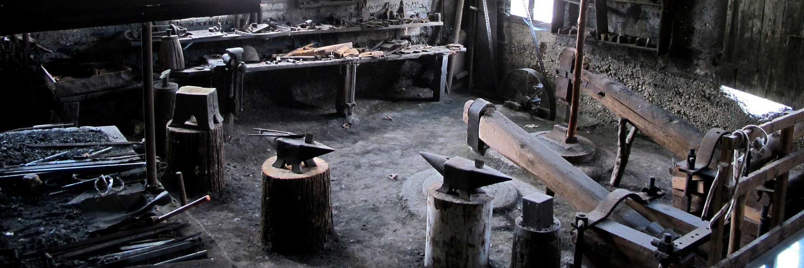
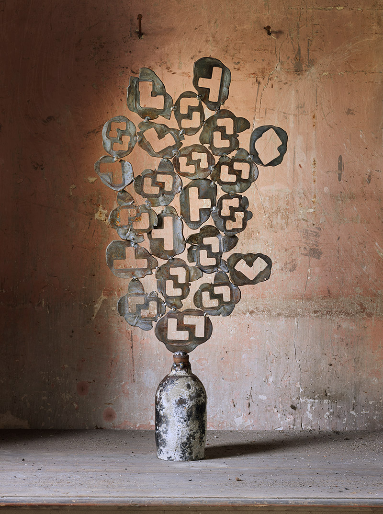
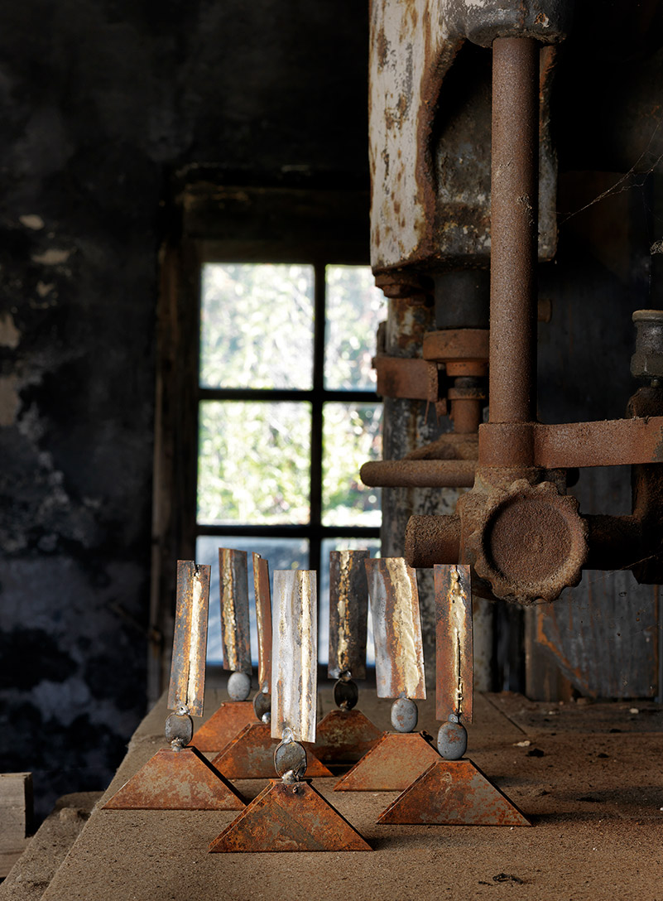
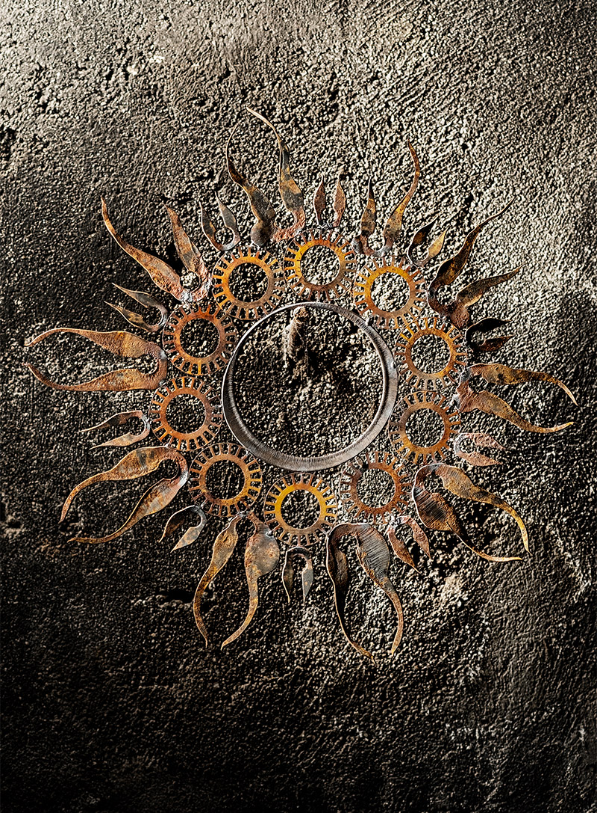
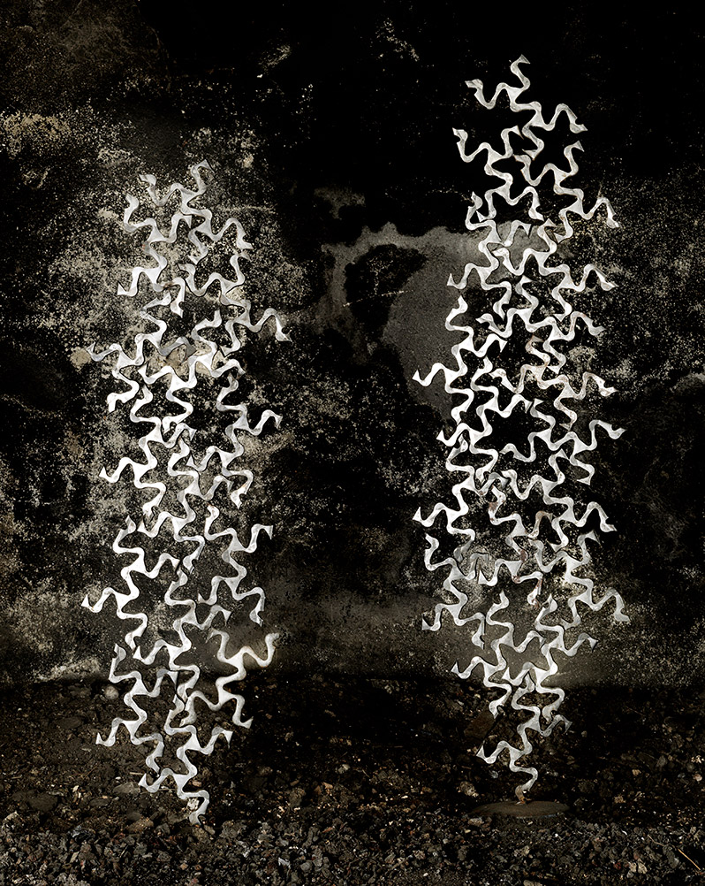
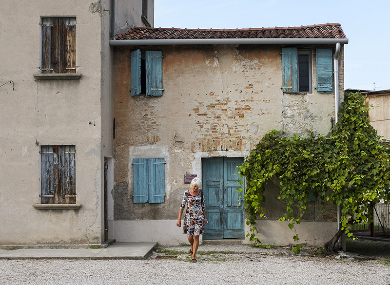

Maglio dei Tonet - Francenigo (Treviso)
Ritorno a casa
Il maglio è il luogo dove hanno cominciato a diventare concreti i sogni dell’impresa.
I muri sgretolati e porosi hanno assorbito e forse ancora trattengono la piena di voci, di
ingiunzioni, di energia degli antenati. "Qui ho imparato a vivere" dice un vecchio operaio che apre la
porta dell'officina.
Religiosità del lavoro e della vita.









Le creature di fanno riconoscere dalla forgia e dal maglio perché hanno la stessa pelle rugginosa.



Per niente intimidite infiorescenze metalliche stanno sui bancali, figurine impertinenti si assiepano sul tavolo della mensa dove mangiavano gli operai.


Una pausa si impone, forse un sorriso.
